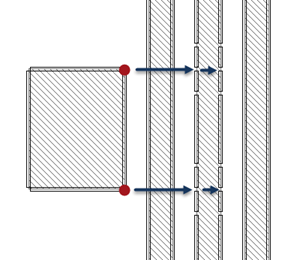
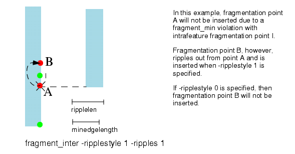
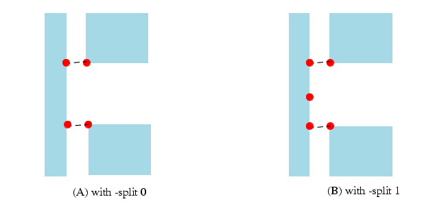

fragment_inter
Fragmentation control: Used to define parameters for interfeature fragmentation.
Usage
fragment_inter [-adjust] [‑away] [‑combined] [‑conflictPriority type…] [-cornerDist w]
[-distancePriority {0 | 1}] [‑externalOnly] [‑internalOnly] [‑interdistance y]
[‑minshield distance] [‑rem r] [‑remext r]
[-ripples x | -num x] [-ripplelen z]... [-ripplestyle {0 | 1 | 2}]
[‑shield n] [-shift z] [‑skipCorners] [-split {0 | 1}] [‑sym] [‑symbisect]
Arguments
- -adjust
An optional keyword that adjusts the insertion point to avoid a minedgelength violation. Sometimes an insertion point is too close to a corner (or fragment break) to be inserted and prevents fragmentation. This results in no fragmentation occurring at all. Specifying -adjust allows the initial insertion point to be shifted to avoid a minedgelength violation and enables fragmentation. If shifting the initial insertion point up to minedgelength is still not enough to insert the point, no fragmentation occurs.
- ‑away
An optional argument that prevents corners from generating fragments across the interior of the polygon. This may be useful when a highly specific value of shielding is in use. The default is to allow interfeature fragmentation to generate fragmentation in all directions.
- ‑combined
An optional argument that causes fragment_inter to run concurrently on all layers listed in fragment_interlayers. Normally, layers are processed one at a time, which gives points inserted by earlier layers priority over points inserted by later layers. If the layers are processed concurrently, then ‑conflictPriority considers the points from all layers during resolution. See “Example 3 - Managing Conflict Between Multiple Layers”.
- ‑conflictPriority type
An optional argument that specifies how conflicts should be resolved. Conflicts can occur when two interfeature breakpoints are so close together that they violate fragment_min. Conflicts are resolved by comparing the two points and allowing the higher priority one to be inserted on the edge.
Specify any of the following keywords to build a priority list. Each type should be separated by a space.
cornerdist — The distance from either corner on the edge receiving fragmentation. Points toward the middle of the edge are used in preference to points towards the ends.
distance — The distance between the corner and the edge receiving fragmentation. Corners closer to the edge are used in preference to corners farther away.
projection — The projection of the corner’s edge to the edge receiving fragmentation. Larger projection (that is, a longer common run) is used in preference to smaller projection.
pt1 — The distance from point 1 on the edge being broken. (Polygon edges are traversed such that the inside of the polygon is to the right. Point 1 is the first endpoint of the edge.) Corners closer to point 1 are used in preference to corners farther away.
shielding — The number of edges between the corner and the edge receiving fragmentation. Smaller shield counts are preferred over larger shield counts.
size — The width of the corner’s edge. Corners with longer edges are used in preference to narrower shapes.
The default priority order is shielding, distance, size, projection, cornerdist, pt1, and geometric. Types not specified are added to the end of the list of specified types in the order shown. For example, “‑conflictPriority size projection” is treated as “‑conflictPriority size projection shielding distance cornerdist pt1 geometric”.
- -cornerDist w
An optional argument that indicates the minimum distance at which an interfeature fragmentation point can be inserted from a corner. If the point is less than the distance w from a corner, it will not be inserted. If it is equal to or greater than distance w, it will be inserted. Priority is established by rules described in the section “Fragmentation Point Priority”.
In general, use -cornerDist if performing interfeature fragmentation before intrafeature, or when there might be multiple fragments within an area you do not want further fragmented. Use -skipCorners if intrafeature fragmentation runs first, as it ignores any fragments touching either convex or concave corners.
- -distancePriority {0 | 1}
When this value is set to 1, then the priority insertion of interfeature fragmentation points is decided by the distance from the projection point. When -distancePriority 1 is set, the closer of the two projection points “wins.” When two projection points have the same distance, the one with a smaller shielding count “wins.”
With -distancePriority 0, the “winner” depends on the order of processing and cannot be determined ahead of time. The default is 1.
- -externalOnly
Corners will only generate interfeature fragments if they are outside the polygon. Corners that are across the polygon from an edge will not generate fragmentation. (This is the opposite of the internalOnly option.) Note that while the “-shield” option is fixed and therefore not available for “internalOnly”, it is available for externalOnly. This is very useful for controlling fragmentation from the externalOnly option, which can cause fragmentation to occur in correct, yet unexpected, locations.
- -interdistance y
An optional argument specifying the maximum distance at which interfeature fragmentation will occur. This parameter is specified in microns. The default value for -interdistance is 1.5*(lambda/NA).
- -internalOnly
Corners will only generate interfeature fragments if they are within the polygon. Corners from one polygon will not generate interfeature fragmentation on another polygon. Also, corners that are separated from a polygon by a space will not generate any fragment breaks.
Note:The shield option defaults to 1 for internalOnly, and no other value may be specified.
- ‑minshield distance
An optional argument that specifies the minimum shielding value that must be reached before fragmentation occurs. The distance must be less than the ‑shield n value. The default distance is 0.
For example, a value of ‑minshield 2 ‑shield 4 means that fragmentation (assuming sufficiently large ‑interdistance) propagates on the third and fourth edges from a corner. The nearest and next nearest neighboring edges do not receive a fragmentation point.
Figure 1. fragment_inter -minshield 2 -shield 4 -ripples 1If ‑shield and ‑minshield are set to the same value it is an error.
- -rem r
An optional argument specifying the minimum allowed remainder. If the interfeature fragmentation would produce an edge with length smaller than r, then that fragmentation will not occur. If not specified, the default value used is fragment_min.
- ‑remext r
An optional argument that specifies the minimum remaining distance between an interfeature fragmentation point and any external (pre-existing) fragmentation points. The distance must be greater than or equal to minedgelength. This argument is similar to ‑rem but applies only to this one case.
The ‑remext argument cannot be specified with ‑ripplestyle 0. It generates a setup file error.
The default is the value of ‑rem r. If ‑rem is not specified, the default is minedgelength.
- -ripplelen z
An optional argument specifying the length of a single ripple edge in microns. The default for ripplelen is fragment_min in microns. It is possible to specify the length of each ripple created by interfeature fragmentation. Up to 8 ripples can be listed.
- [-ripples x | -num x]
An optional argument specifying the number of ripples. The default value for -ripples or ‑num is 0.5*(lambda/NA)/ripplenlen, rounded to the nearest whole number. The maximum number of ripples you can create is ten (10).
- -ripplestyle {0 | 1 | 2}
An optional argument used to resolve conflicts regarding ripple generation. (You can also specify your own solution with the ‑conflictPriority type argument.) The default is 1, but changing it to 2 is recommended.
It is an error to specify ‑ripplestyle 0 with ‑sym or ‑symbisect.
Choose one of the following:
0 — All conflicts between fragmentation points are resolved according to the ‑distancePriority argument and ripples will not be generated by the interfeature fragmentation points that could not be created due to the -rem constraint.
If 0 is specified, the statement cannot also use ‑remext.
1 — This option allows for ripples to be generated not only by successfully-inserted interfeature fragmentation points, but also by those interfeature fragmentation points that could not be inserted due to -rem constraints, as shown in Figure 2.
The following rules are used to uniquely resolve -rem conflicts between fragmentation points:
Intrafeature fragmentation points and their ripples have the highest priority.
Interfeature fragmentation points have priority over ripples from all other interfeature fragmentation points. The priority of an interfeature point is determined (in order of importance) by:
The distance between the fragmentation point and the fragmentation-causing corner.
The number of shielding edges between the fragmentation point and the fragmentation causing corner.
The distance from the fragmentation point to the middle of the fragmented edge.
The distance from the fragmentation point and the first point of the fragmented edge.
Thus, if the distance between two interfeature fragmentation points is less than the -rem argument, the fragmentation point that is closer to the corner that caused the fragmentation will be inserted. If the distances between the fragmentation points and the corresponding fragmentation causing the corners are equal, the fragmentation point with a smaller number of shielding edges will be inserted.
The priority of ripples from interfeature fragmentation points is determined (in order of importance) by:
The distance from a ripple to the interfeature fragmentation point that the ripple originated from.
The priority of the fragmentation point that the ripple originated from based on the originating point’s distance to the fragmenting corner, number of shielding edges, and whether the ripple originating point was inserted or not.
Ripples may be generated by the fragmentation points that could not be created due to the -rem constraint.
Multiple ripples can have the same priority under the rules for ripples defined previously. The conflicts between ripple points with the same priority that do not have a conflict with any higher priority points are resolved as follows:
Ripple points of the same priority are divided into sets such that there are no ‑rem conflicts between ripple points in different sets and there are ‑rem conflicts between neighboring ripple points inside each set.
Each set is processed according to the size of the set:
If set size is 1, the ripple point in the set is inserted.
If set size is 2 and -split parameter is set to 0, neither point in the set is inserted. If ‑split is set to 1, a new ripple point that is in the middle of the two points in the set is inserted.
If set size is greater than 2, the tool inserts each point in the set based on the distance from the first point in the edge.
Figure 2. Example -ripplestyle
2 — This option is recommended. It is similar to 1 (the default) in that it also generates ripples from both successfully inserted interfeature fragmentation points and those that could not be inserted due to ‑rem constraints. The following rules are used to uniquely resolve ‑rem conflicts between fragmentation points.
Any preceding fragmentation caused by commands listed before fragment_inter.
Interfeature (fragment_inter) fragmentation points have priority over ripples from all other interfeature fragmentation points. The priority of an interfeature point is, from highest to lowest,
The number of shielding edges between the fragmentation point and the fragmentation-causing corner
The distance between the fragmentation point and the fragmentation-causing corner
The wider of the polygons with the fragmentation-causing corner
The projection of the fragmentation-causing edge on to the fragmented edge
The distance from the fragmentation point to the middle of the fragmented edge
The distance from the fragmentation point to the first point of the fragmented edge
- -shield n
An optional argument used to ensure that interfeature fragmentation can only occur if the edge undergoing fragmentation is shielded by fewer than n edges. When -shield is set to a number greater than 0, edges must meet this shielding constraint and the distance constraint in order to be affected by interfeature fragmentation.
An edge is “shielded” by any other edges which lie between it and the interfeature fragmentation vertex. If n is 0, then shielding is turned off. The default value for -shield is 0. Figure 3 shows an example of shielding.
Figure 3. Interfeature Shielding Example
- -shift z
An optional argument specifying the distance that an interfeature fragmentation break should be shifted, in microns. Normally, a fragmentation break will occur on a fragment at a location that is exactly perpendicular to a corner. The shift option allows this break to be shifted away from the corner by the distance indicated by z (this is similar to the concept of opposite adjacent). A positive distance moves the fragment break point outward along the generating edge.
- -skipCorners
Interfeature fragmentation can interfere with intrafeature fragmentation. Fragmentation from the fragment_corner command can be segmented with subsequent interfeature commands. When the -skipCorners option is specified, interfeature projections on previously formed fragments are not imposed (see Figure 6). Use this option to preserve corner fragmentation.
- -split {0 | 1}
An optional argument controlling the splitting of fragments. The following values are possible:
0 — specifies maintaining a single fragment for any fragment between interfeature projection points with length <= (2 * ripplelen + remainder). Ripplestyle must be 0 for -split 0 to occur. This is the default. If ripplestyle is 1, -split 0 is not allowed.
1 — specifies splitting into two equal fragments any fragment between interfeature projection points with:
(2 * remainder) <= length < (2 * ripplen + remainder) if -ripplestyle 0 is selected.
(2 * ripplen) <= length < (2 * ripplen + remainder) if -ripplestyle 1 is selected.
Note:If the -ripplestyle is set to 1, -split will be set to 1, overriding the specified ‑split user setting in the setup file.
Figure 4. -split Example
- -sym | ‑symbisect
Two optional arguments that handle fragmentation created by thin polygons in different ways. These solve the problem of fragmentation on an edge from the tip of a scattering bar less than fragment_min in width. The two corners both attempt to insert interfeature fragmentation points on the edge, but are blocked by being closer than the minimum fragment length.
Note:These options only apply to Manhattan (horizontal or vertical) edges. No adjustments are made on edges that are not Manhattan.
‑sym — Creates a minimum length fragment with the same center as the thin polygon.
Fragments are fragment_minin size and only occur on horizontal or vertical edges. See Figure 7 and Figure 8 for an example of how this option changes output.
‑symbisect — Inserts a single fragmentation point instead of a minimum-length fragment. The inserted point is halfway between the two unsuccessful points. Ripples are generated from this vertex if specified.
Both options have limitations. The algorithm will only insert one of these shifted point(s) to avoid a minedgelength violation if there is no fragment_min violation on the opposite side of the point. This means that groups of points that violate fragment_min receive no corrections. Also, neither ‑sym nor ‑symbisect can be used with ‑ripplestyle 0.
Description
This keyword defines the fragmentation parameters that influence interfeature fragmentation.
Fragmentation is the process of breaking a layout polygon’s edges (or parts of edges) into smaller segments by adding vertices. The purpose of fragmentation is to prepare the layout for correction by creating more edge fragments wherever the layout needs more correction.
Interfeature fragmentation adds vertices based on proximity to other features. The interfeature fragmentation algorithm adds new vertices to edges that meet the following criteria:
The distance from the edge to the corner causing the fragmentation is less than or equal to the distance specified by -interdistance.
None of the fragments that would result from fragmentation is shorter than the distance specified by -rem.
The edge is separated from the corner by fewer than n edges, where n is specified by ‑shield.
After the initial breakpoint is inserted, additional vertices are inserted on both sides of the original point with the length of the fragments formed defined by the -ripplelen parameter.
If none of the optional arguments are specified, the interfeature fragmentation algorithm calculates appropriate values. The diagram in Figure 6 shows how the interfeature fragmentation takes place.
Fragmentation Point Priority
When placing fragmentation points using -cornerDist, priority is established using the following rules:
All fragment_corner fragmentation points and their ripples have the highest priority.
Interfeature fragmentation points have priority over ripples from all other interfeature fragmentation points. The priority of an interfeature point is determined (in order of importance) by:
The distance between the fragmentation point and the fragmentation causing corner.
The number of shielding edges between the fragmentation point and the fragmentation causing corner.
The distance from the fragmentation point to the middle of the fragmented edge.
The distance from the fragmentation point and the first point of the fragmented edge.
Thus, if the distance between two interfeature fragmentation points is less than the ‑rem argument, the fragmentation point that is closer to the corner that caused the fragmentation is inserted. If the distances between the fragmentation points and the corresponding fragmentation-causing corners are equal, the fragmentation point with a smaller number of shielding edges will be inserted.
The priority of ripples from interfeature fragmentation points is determined (in order of importance) by:
The distance from a ripple to the interfeature fragmentation point that the ripple originated from.
The priority of the fragmentation point that the ripple originated from based on an originating point at Y’s distance to the fragmenting corner, the number of shielding edges, and whether the ripple originating point was inserted or not.
Ripples may be generated by the fragmentation points that could not be created due to the -rem constraint.
Note that multiple ripples can have the same priority under the rules for ripples as defined previously. The conflicts between ripple points with the same priority that do not have a conflict with any higher priority points are resolved as follows:.
First, ripple points of the same priority are divided into sets such that there are no -rem conflicts between ripple points in different sets and there are -rem conflicts between neighboring ripple points inside each set.
Each set is processed according to the size of the set:
If the set size is 1, the ripple point in the set is inserted.
If the set size is 2, and -split parameter is set to 0, neither point in the set is inserted. If -split is set to 1, a new ripple point that is in the middle of the two points in the set is inserted.
If the set size is greater than 2, Calibre nmMPC attempts to insert each point in the set based on its distance from the first point in the edge. When -ripplestyle 0 is specified, all conflicts between fragmentation points are resolved according to the -distancePriority argument, and ripples will not be generated by the interfeature fragmentation points that could not be created due to the -rem constraint.
Examples
Example 1 - skipCorners and cornerDist
In this example, the fragment_corner command forms two fragments on the convex corner. The following interfeature command places two additional fragment points in between the original fragment formed with fragment_corner:
fragment_corner convex 0.1 0.05
fragment_inter -interdistance 0.13 -skipCornersHowever, the -skipCorners option is enabled in this case to prevent from breaking the initial set of intrafeature fragments.
Another way to achieve the same effect in this specific instance is by setting ‑cornerDist to the len1 of fragment_corner:
fragment_corner convex 0.1 0.05
interfeature -interdistance 0.13 -cornerDist 0.1In general, use ‑skipCorners if intrafeature fragmentation runs first, because it ignores any fragments touching either convex or concave corners. Use ‑cornerDist if performing interfeature fragmentation before intrafeature, or when there might be multiple fragments within an area in which you do not want further fragmentation.

Example 2 - Scattering Bars
Scattering bars are generally quite thin, usually less than the minimum edge length. This means that when the corners of a scattering bar fragment the edge of a polygon, one corner generates a break point but the other does not because the fragment would violate the minimum length as shown in Figure 7.

Specifying ‑sym in the interfeature command reduces this sort of fragmentation. Instead of attempting to split the edge at fragments in line with each corner, it attempts to create a single fragment of minedgelength centered on the scattering bar end as shown in Figure 8. Because of the many causes of fragmentation, some other cause may prevent ‑sym from adjusting points as needed to create a symmetric fragment of sufficient size. Also, non-90 degree edges are not adjusted.
Example 3 - Managing Conflict Between Multiple Layers
By default, when fragment_interlayers specifies multiple layers (for example, A, B, and C) the interfeature fragmentation from each layer is completed one layer at a time; that is, all the points from layer A are inserted, then layer B, then layer C. If a shape is receiving points from more than one layer, the one to run first inserts its points no matter what the conflict resolution scheme.
By adding the ‑combined option, the layers in fragment_interlayers are treated as one layer for the purposes of generating points. (The shapes in the layers are not merged.) This allows the conflict resolution scheme to consider all potential insertions as a set and does not give priority to any particular layer.
Figure 9 shows two layers, both of which generate fragmentation on the shapes in the middle. The following lines were used to generate the results, differing only in ‑combined (in green):
layer Green opc
layer Blue island
fragment_layer_order full
fragment_layer Green {
fragment_interlayers Green Blue
fragment_inter -interdistance 0.9 -ripples 0 -shield 0 \
-cornerDist 0.08 -rem 0.038 -remext 0.07 -ripplestyle 2 -combined
}The results are shown on the right. The top resolution uses the ‑combined option, allowing ‑ripplestyle 2 to give priority to the points from Blue, as there were fewer shielding edges than the points generated by Green. The lower resolution was generated without ‑combined. As fragment_interlayers specified Green before Blue, the interfeature points from Green were inserted. When fragment_inter processed Blue, the earlier points prevented them from being inserted.